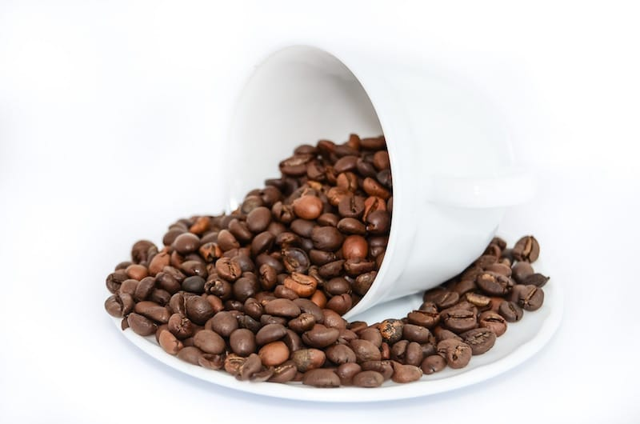
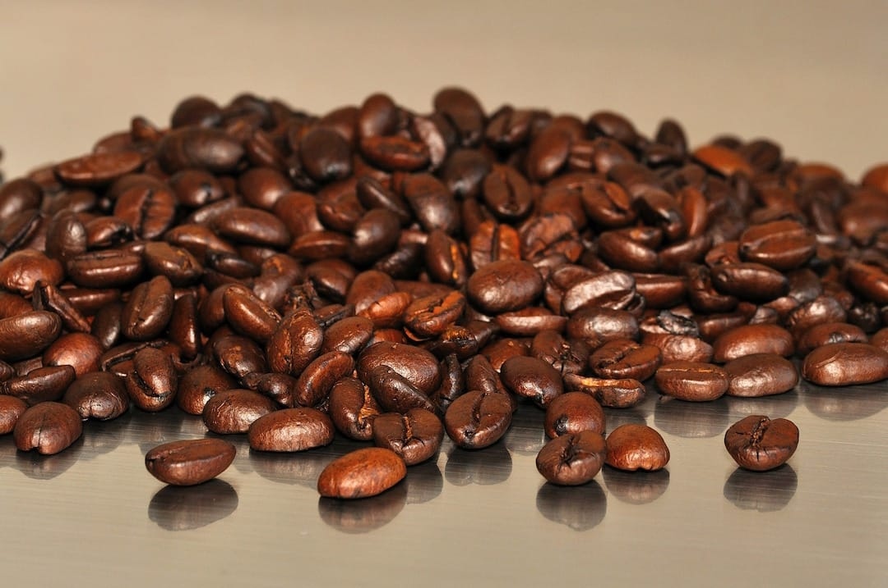
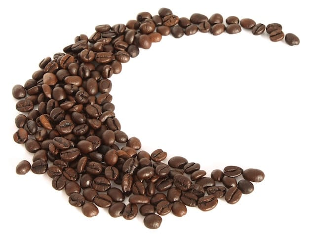
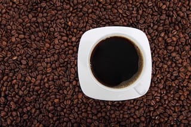

Simplemente café...
Energía de vida...
Diferentes tipos de café...
Diferentes formas de preparación
El café es una bebida que se obtiene mediante el percolado de agua caliente a través de los granos tostados y molidos de los frutos de la planta del café (cafeto); es altamente estimulante por su contenido de cafeína, una sustancia psicoactiva. Es uno de los productos más comercializados a nivel mundial, además de estar entre las tres bebidas más consumidas por el ser humano (junto con el agua y el té).